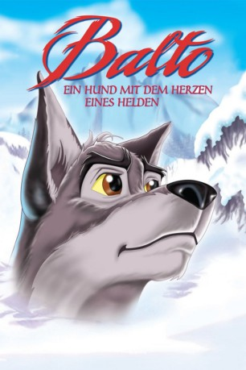
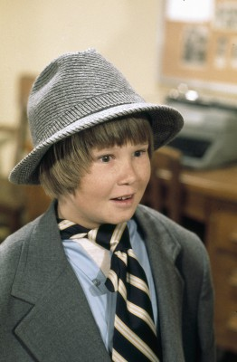
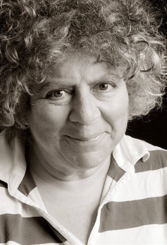
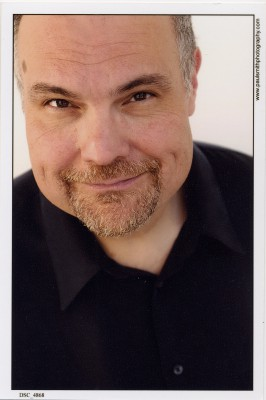

#6027 Balto - Ein Hund mit dem Herzen eines Helden
Alternativ: Balto
 
 IMDB-Wertung: 7.1 / 10
IMDB-Wertung: 7.1 / 10  Metascore: 0
Metascore: 0 
In dem kleinen Ort Nome in Alaska, lebt der Schlittenhund Balto. Doch Balto ist kein gewöhnlicher Hund zur Hälfte ist er ein Wolf. Und genau aus diesem Grund wird er sowohl von den anderen Hunden als auch von den Dorfbewohnern gemieden. Sein ärgster Feind ist Steele, der Anführer der Schlittenhunde, der zu allem Überfluß auch noch ein Auge auf Baltos große Liebe, Jenna, geworfen hat. Eines Tages wird Jennas kleine Besitzerin schwer krank und Steele wird mit seiner Meute losgeschickt, um im nächsten Dorf Medizin zu holen. Doch die Hunde geraten in einen Schneesturm und fast scheint es, als wäre alles verloren. Nur einer gibt nicht auf: Balto. Mit dem Mut und dem Herzen eines Helden kämpft sich durch den Sturm, um die Mission erfolgreich zu beenden und das Kind zu retten...
Jahr: 1995
Dauer: 77 Minuten
FSK: 0
Land: USA Studio: Universal PicturesTonspuren:
Untertitel: Deutsch,
Auflösung: 1080p (1920x1040) Größe: 5591 MB
Genre: Drama, Abenteuer, Animation/Trick, Familie, Geschichte
Regisseur: Simon Wells
Drehbuch: David E. Talbert
Soundtrack:
Darsteller:
 Kevin Bacon als Balto
Kevin Bacon als Balto Bob Hoskins als Boris
Bob Hoskins als Boris Bridget Fonda als Jenna
Bridget Fonda als Jenna Jim Cummings als Steele
Jim Cummings als Steele- Phil Collins als Muk and Luk
 Jack Angel als Nikki
Jack Angel als Nikki-  Robbie Rist als Star
- Juliette Brewer als Rosy
-  Miriam Margolyes als Grandma Rosy / Extra Voices
- Donald Sinden als Doc
- William Roberts als Rosy's Father
 Garrick Hagon als Telegraph Operator
Garrick Hagon als Telegraph Operator-  Michael McShane als Extra Voices
- Jennifer Blanc-Biehn als , uncredited
- Jim Carter als , uncredited
- Christine Cavanaugh als , uncredited
- Tina Clark als The Balladeer's Backup Singer #4 , uncredited
- Michael Shannon als , uncredited
 Frank Welker als The Bear , uncredited
Frank Welker als The Bear , uncredited- Danny Mann als Kaltag
- Sandra Dickinson als Sylvie / Dixie / Rosy's Mother
- Lola Bates-Campbell als Granddaughter
- Bill Bailey als Butcher
- Big Al als Morse
- Austin Tichenor als Extra Voices
- Reed Martin als Extra Voices
- Adam Long als Extra Voices
- Sam Bacco als The Balladeer's Percussionist , uncredited
- Holly Burt als The Balladeer's Choir Member , uncredited
- Nathan DiGesare als The Balladeer's Pianist , uncredited
- Joel Dunham als The Balladeer's Choir Member , uncredited
- Katy Dunham als The Balladeer's Choir Member , uncredited
- Emily Estes als The Balladeer's Choir Member , uncredited
- Bonnie Keen als The Balladeer's Backup Singer , uncredited
- Chris Rodriguez als The Balladeer's Backup Singer #2 , uncredited
- Chester Thompson als The Balladeer's Drummer , uncredited
- Micah Wilshire als The Balladeer's Backup Singer #3 , uncredited
Datei: X:\Kinder Filme (A-F)\Balto - Ein Hund mit dem Herzen eines Helden (1995, FSK0, 1920x1040).mkv seit 24.04.2017
Festplatte: Kinder-Filme+Trick
 Es gibt insgesamt 68 Filme in der Gruppe 'Kinder Filme (A-F)'
Es gibt insgesamt 68 Filme in der Gruppe 'Kinder Filme (A-F)'